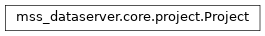

Project¶
-
class
mss_dataserver.core.project.Project(**kwargs)[source]¶ Bases:
objectA project holds global configuration and settings.
- Parameters
kwargs (dict) – The dictionary created from the configuration file.
- Variables
logger (logging.Logger) – The logger instance.
project_config (dict) – The project configuration section.
author_uri (String) – The Uniform Resource Identifier of the author.
agency_uri (String) – The Uniform Resource Identifier of the author agency.
config (dict) – The complete configuration dictionary (kwargs).
process_config (dict) – The process configuration section.
db_host (String) – The URL or IP of the database host.
db_username (String) – The database user name.
db_pwd (String) – The database password.
db_dialect (String) – The dialect of the database.
db_driver (String) – The driver of the database.
db_database_name (String) – The name of the database.
db_tables (list) – The tables loaded from the database.
db_inventory (
mss_dataserver.geometry.DbInventory) – The geometry inventory of the project.inventory (
mss_dataserer.geometry.DbInventory) – A dynamic property returning db_inventory.event_library (
mss_dataserver.event.core.Library) – The event library of the project.detection_library (
mss_dataserver.detection.Library) – The detection library of the project.
Properties¶
inventoryThe geometry inventory.
Methods¶
|
Initialize the instance. |
Connect to the database. |
|
Create the database tables needed for the project. |
|
|
Create an detection catalog in the database. |
|
Create an event catalog in the database. |
Create a sqlAlchemy database session. |
|
Get the detection catalog names available in the database. |
|
|
Get an event catalog. |
Get the event catalog names available in the database. |
|
|
Get events using search criteria passed as keywords. |
Load the required database tables from the modules. |
|
|
Load a detection catalog from the database. |
|
Get an event by event id or public id. |
|
Load an event catalog from the database. |
|
Load the geometry inventory. |
Load the inventory directly from the XML file ignoring the database. |
Inheritence diagram¶
